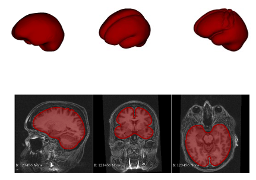
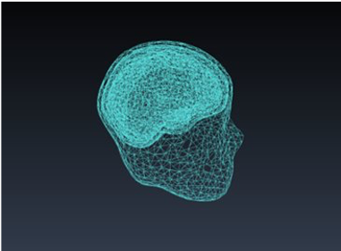
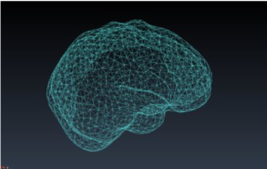
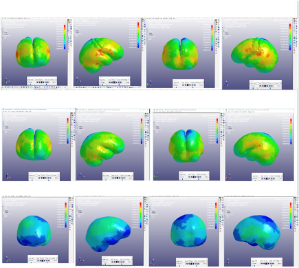

Rugby is a full contact sport played by millions around the world. One of the most common injuries associated with this sport is concussion, which is a temporary functional impairment caused by an impulse to the head. Concussions are very challenging to diagnose and very limited research has been conducted on the mechanics of head impacts in rugby, and other un-helmeted sports. This project aimed to address this by performing analysis on the inter-cranial response of the head under a typical rugby impact through developing a set of simple but representative numerical models and applying forces typical to that of rugby to these to analyse the accelerations, stresses and pressure patterns associated with the impacts.
I was required to come up with a new approach to this subject, the idea was to supplement and expand upon PhD student Katie’s thesis. I researched current studies of head impacts in un-helmeted sports, of which there are few, and potential impacts of composition of heads. I found some suggestions that size of head/ gyri and sulci might have an impact. Gyri and sulci are the peaks and troughs, respectively, that make up the folded surface of the cerebral cortex. Larger and deeper sulci are called fissures, these divide the brain into lobes and the two hemispheres. I developed models to test this theory.

I developed a set of numerical models representing a simplified human head, including the skull, CSF and brain. The model was developed from a MRI scan of an average sized male head using the medical imaging software ‘3D Slicer’. Three models were made, including a smooth brain, a model with just fissures, and a model with the most common gyri/sulci and fissures. The CSF and skull remained constant throughout the three models. These 3D models were then developed into a finite element model using GiD and subsequently uploaded to LS-Dyna to apply a typical rugby impact force and analyse the stress distributions and magnitudes in the various models. The post processor was used to assess the extent of the effect of the wrinkles on the mechanical response of the brain.
Simulations demonstrating the results were used both as evidence to support the project and for aesthetic presentation of the findings of the project.


The results successfully demonstrated a large difference between the models. The wrinkles caused stress reflections and concentrations, ultimately largely affecting the stress patterns across the brain. This highlighted the need to model the brain with folds to ensure accurate mathematical analysis of the forces present during impact. This was a big success for the project, as there is not a precedent for head models to include the folded cerebral cortex, however these results show that these details drastically increase the stresses encountered in the brain and suggests that they should be included in models. This project ultimately contributed to a presentation at the ESBiomechanic 2019 Conference in Vienna.
